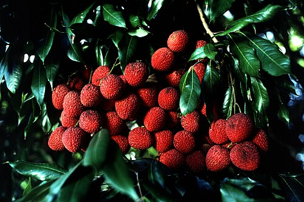

1. Sapindaceae (Soapberry Family)
The Sapindaceae occur in temperate to tropical regions, many in laurel forest habitat, throughout the world. Plants of this family have habits ranging from trees to herbaceous plants to lianas, and usually with compound leaves and small flowers. Many of its members produce juicy, edible fruits. Sarawak's forests contain wild relatives of familiar fruit crops, which makes them valuable for future breeding.
